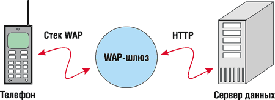
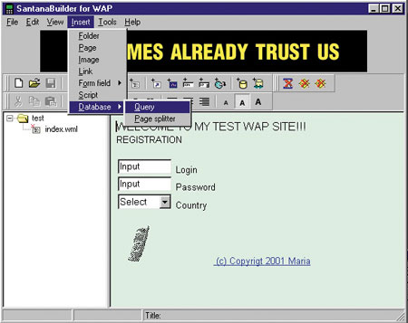
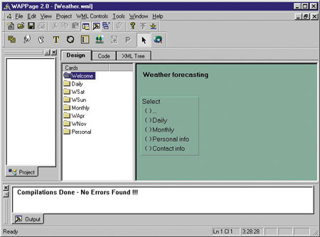
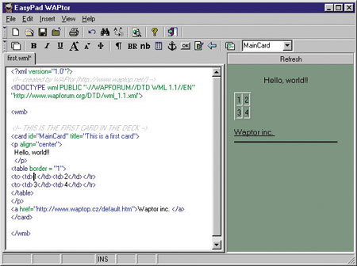

maria@inion.ru
Основы
Wireless Application Protocol (WAP) представляет собой набор языков и инструментов, образующих инфраструктуру для внедрения новых услуг мобильной связи. К традиционным услугам мобильной связи относятся прежде всего такие сервисы, как обыкновенные звонки и короткие текстовые сообщения (SMS-сообщения в сети GSM). Но, как показывает практика, все это не так уж удобно, да и не очень дружественно по отношению к пользователю. WAP существенно расширяет набор таких услуг, позволяя внедрять сервисы, схожие с теми, что предлагаются в World Wide Web.
Стек протоколов WAP основан на классической семиуровневой модели OSI (Open System Interconnection) и включает в себя четыре основные составляющие и одну спецификацию самого высокого уровня - WAE (Wireless Application Environment). Стандарт WAE описывает WML - язык разметки, используемый для создания информационных страниц. Составляющие стека WAP перечислены ниже.
- Стандарт прикладного уровня WTA (Wireless Telephone Application) описывает способ создания и взаимодействия специальных операторских сервисов: автоматический биллинг, информационные бюллетени.
- Протокол сессионного уровня WSP (Wireless Session Protocol) поддерживает неразрывным сеанс связи в течение длительных интервалов ожидания ответа, которые могут возникнуть при выборе SMS в качестве носителя или при применении удаленного шлюза.
- Уровень транзакций, который обрабатывает отдельные пакеты соединения, реализуется протоколом WTP (Wireless Transaction Protocol).
- Протокол передачи WDP (Wireless Datagram Protocol), имеющий в своей основе классические TCP/IP и UDP/IP. Над основным протоколом передачи WDP для обеспечения безопасности и шифрования данных в соединении введена надстройка - WTSL (Wireless Transport Security Layer).
Последний, физический уровень характеризует способ передачи данных в эфире. Разработчики WAP постарались сделать эту часть спецификации как можно более гибкой, чтобы сервисом могли воспользоваться все, вне зависимости от того, какой стандарт мобильной связи поддерживает терминал. В версии WAP 1.0 в качестве носителя (так называют используемый физический коммуникационный протокол) предлагался исключительно SMS. Такое положение дел не устраивало многих операторов (в частности, не предусматривался протокол для аналоговых сетей). Поэтому спустя четыре месяца появилась версия 1.1, в которую были добавлены: СDPD для аналоговых сотовых сетей, USSD, классический CSD, GPRS для цифровых сетей. Такое добавление повлекло за собой значительную переделку протокола, сделавшую обе версии практически несовместимыми.
Согласно протоколу WAP, уже существующий Интернет-контент непосредственно на клиентское устройство (телефон) не передается. Работа в режиме обработки контента клиентским устройством пока невозможна из-за большого количества проблем. Основная трудность заключается в том, что в Интернет информация представлена в форме HTML-страниц. Работа с ними рассчитана на быстроту связи, мощные процессоры, большой объем памяти, большие экраны, мультимедийное оборудование, а также может требовать эффективных механизмов ввода информации. Все эти требования без труда выполняются на обыкновенном компьютере. Однако мобильные телефоны обладают очень медленными процессорами и небольшим объемом памяти. Кроме того, канал связи отличается очень низкой пропускной способностью и прерывистостью связи, а механизмы ввода информации крайне неудобны. Большинство существующих HTML-страниц попросту не будут работать при таких условиях. WAP использует совершенно новый язык разметки - Wireless Markup Language (WML), более простой, но более строго определенный, чем HTML. В WAP применяются также язык скриптов - WMLScript, представляющий собой упрощенную версию JavaScript, и свой формат растровых изображений - Wireless Bitmap, или WBMP.
Протокол HTTP сам по себе недостаточен для использования в беспроводных системах. Используя эквивалентные HTTP, но бинарные и сжатые форматы, можно снизить размеры пересылаемых сообщений с сотен до всего лишь нескольких байт в рамках одного запроса. Именно поэтому WAP определяет новый стек протоколов. Однако для того, чтобы окончательно упростить задачу разработки сервисов, в WAP предлагается использовать шлюз между мобильным терминалом и сервером - провайдером информации.
|  |
| Рис. 1. Схема взаимодействия по протоколу WAP.
|
Схема работы WAP-сервисов включает три основных компонента. Первый - это WAP-микробраузер, второй - WAP-шлюз и последний - сервер с WML- и WMLS-контентом (рис. 1). В качестве микробраузера может выступать мобильный терминал или эмулятор. Разница между терминалом и эмулятором лишь в том, что в терминале обязательно будет встроена, по крайней мере, часть стека протоколов WAP, а эмулятор может воспользоваться TCP/IP и заниматься только визуализацией WML.
WAP-шлюз взаимодействует с микробраузером, используя стек протоколов WAP. Шлюз переводит полученные от пользователя запросы в формат HTTP. Поэтому провайдеры информации могут использовать любой HTTP-сервер, применяя любые существующие разработки для создания сервисов и их администрирования. Когда загрузка составляющих контента завершена, шлюз компилирует элементы WML в бинарную форму, что позволяет обеспечить большую скорость обмена информацией. При необходимости (совершение финансовых сделок, передача конфиденциальной информации) содержимое шифруется.
На сегодняшний день существует несколько встраиваемых микробраузеров. Наиболее известный - от компании Unwired Planet (UP); он применяется в WAP-телефонах Alcatel, Motorola, Samsung. Nokia и Ericsson имеют собственные решения, кроме того, существуют модели телефонов (Benefon, Sony), использующие ПО от Microsoft, - Mobile Explorer.
Существующие микробраузеры имеют свои особенности. Если говорить о параметрах, имеющих значение при разработке сервисов, то здесь микробраузеры, как видно из табл. 1, прежде всего различаются максимальным размером загружаемой "колоды" (в данном случае объемом загружаемого за один сеанс контента).
Таблица 1. Размер загружаемых "колод" для браузеров разных производителей
| Браузер* | Размер колоды, байт |
|---|---|
| Nokia (в модели 7110) | Около 1500 |
| Ericsson (в модели R320) | Около 3000 |
| Ericsson (в модели R380) | Около 3500 |
| Ericsson (в модели MC218) | Более 8000 |
| UP Browser 3.2 | 1492 |
| UP Browser 4.х | 2048 |
| * В разных моделях телефонов могут применяться различные реализации браузера, настроенные под возможности конкретного телефона. | |
Серверное ПО
Программное обеспечение для WAP-серверов также достаточно многообразно. Различные пакеты предлагаются как компаниями, работающими на рынке мобильной связи, так и сторонними разработчиками.
Компания Nokia предлагает несколько продуктов для WAP. Первый из них - это Nokia Activ Server.
Nokia Activ Server - это открытая платформа для объединения в мобильную сеть существующих интранет- и экстранет-сервисов и информационных систем. Этот продукт предлагает готовую архитектуру для разработки услуг мобильной связи. Nokia Activ Server может использоваться и как шлюз к HTTP-серверам в Интернет, и как отдельное приложение, обеспечивающее связь с различными системами. В последнем случае используются Java-сервлеты и Nokia Activ Server API.
Nokia Activ Server поддерживает множество различных носителей (SMS, CSD). Сервер рассчитан на работу с платформами Windows NT и Solaris; для его работы необходимо наличие на машине Java Runtime Enviroment и Hotspot Engine. Что касается аппаратных требований, рекомендуемая конфигурация: 256 Мбайт памяти, два процессора Pentium III.
Второй продукт - это Nokia Artuse WAP Gateway, связывающий Интернет (или интранет) и мобильные сети. Этот шлюз обладает следующими возможностями:
- поддержка стандарта WAP;
- WAP Push-технология;
- поддержка cookies;
- WAP-безопасность и безопасная связь в Интернет;
- совместимость с предыдущими версиями;
- совместимость с различными технологиями и платформами.
Nokia Artuse WAP Gateway обеспечивает для мобильной связи доступ к различным Интернет-сервисам, благодаря чему информацию из Интернет (например, заголовки новостей, курсы валют и ценных бумаг, результаты спортивных соревнований) можно получить в течение секунд. WAP-шлюз также позволяет применять устройства с поддержкой WAP для доступа к Web-приложениям (например, туристическим и банковским услугам в Сети).
Представляет интерес и такой продукт, как Nokia WAP Toolkit 2.1 - среда для создания, тестирования и демонстрации WAP-приложений. Набор утилит Nokia WAP Toolkit включает в себя инструменты для создания WML-страниц, скриптов на WMLScript, с включением WBMP-графики; средства отладки и симулятор WAP-приложений на телефонах, снабженных поддержкой WAP. В последнем релизе есть возможность использования push-технологии, т.е. доставки "незапрошенного" контента. В этом случае соединение инициируется не клиентом, а сервером (это применяется для распространения новостей, рекламы и т. д.).
Пробная версия Nokia Activ Server и последняя версия WAP Toolkit (бесплатная) доступны на сайте Nokia (http://www.nokia.com/wap)
Собственные разработки в этой области имеет и концерн Ericsson. Разработчикам предлагается два продукта - Ericsson WAP/Gateway Proxy и Jambala WAP Gateway. Оба пакета - это комплексные решения для организации на базе операторов мобильной связи доступа к WAP-сервисам; они включают gateway-сервер с возможностью рекомпиляции HTML-страниц в WML, интерфейс для WTA, поддержку SMS-gateway, CSD и пр. К сожалению, сами продукты не имеют демо- или пробных версий, зато совершенно бесплатно доступен Ericsson Application Toolkit - набор средств для разработки и анализа WML-страниц (http://www.ericsson.com).
Кроме того, Ericsson предлагает WapIDE - интегрированную среду разработки WAP-приложений. Продукт дает возможность операторам сотовой связи, провайдерам информации, разработчикам приложений и любой другой заинтересованной стороне разрабатывать и тестировать реальные WAP-приложения.
Кроме продуктов от Nokia и Ericsson, существует масса продуктов от других производителей. Среди них наибольший интерес представляет проект Kannel. Он был основан компанией Wapit Ltd. (участники WAP Forum) летом 1999 г. с целью разработки свободно распространяемого gateway-сервера для UNIX-платформ. В данный момент на сайте Kannel (http://www.kannel.org) бесплатно можно получить полноценный Wap- и SMS-шлюз для Linux RedHat 6.1 или Debian с исходными кодами. Существует также версия Kannel под Windows, адаптированная под эту ОС фирмой Wapme (http://kannel.dev.wapme.net).
Программные требования открытой версии Kannel:
- компилятор C, средства разработки и другие утилиты;
- библиотека gnome-xml, версией не ниже 2.2.0;
- GNU;
- Posix threads (pthread.h);
- GNU Bison 1.28 (если вы собираетесь изменять WMLScript-компилятор);
- инструменты для работы с языком разметки DocBook (jade, jadetex), если вы собираетесь создавать свою документацию.
Требования к аппаратной части менее строгие. На текущий момент Kannel еще не тестировался на разных платформах, поэтому пока можно только сказать, что продукт нормально работает на платформе PC (Pentium II 400 МГц, 128 Мбайт памяти). При таких параметрах система может одновременно обслуживать нескольких пользователей без особых проблем. В дальнейшем разработчики Kannel планируют довести количество одновременно обрабатываемых запросов до нескольких сотен. Аппаратные требования для Windows-платформы примерно аналогичные.
Размещение WML-контента
Для этого достаточно воспользоваться любым предлагаемым HTTP-сервером. Многие наборы инструментов поставляются с бесплатно распространяемыми серверами; так, с комплектом программ от Ericsson распространяется Xitami Web Server. Есть всего лишь одно условие - сервер необходимо сконфигурировать, так, чтобы он опознавал WML- и WMLS-файлы и устанавливал соответствующий MIME Content-Type (табл. 2).
Таблица 2. Типы WAP-документов
| Тип документа | MIME-тип | Расширение файла |
|---|---|---|
| WML-документ | Text/vnd.wap.wml | .wml |
| WAP-изображение | Image/vnd.wap.wbmp | .wbmp |
| Компилированный WML-документ | application/vnd.wap.wmlc | .wmlc |
| WML-скрипт | text/vnd.wap.wmlscript | .wmls |
| Компилированный скрипт | application/vnd.wap.wmlsriptc | .wmlsc |
Краткое введение в WML
WML основан на модели описания языков XML, следовательно, первой строкой в любом файле должно быть указание на документ DTD (Document Type Definition) для данного языка. В данном случае это будет выглядеть так:
<?xml version="1.0"?>
<!DOCTYPE wml PUBLIC "-//WAPFORUM//DTD WML 1.1//EN"
"http://www.wapforum.org/DTD/wml_1.1.xml">
Здесь указывается DTD, разработанный организацией WAP Forum, он описывает все обязательные теги и элементы стандарта WML, интерпретируемые всеми браузерами.
Сам WML-код должен быть заключен в тег
<wml></wml>
Карты и колоды
"Карты" и "колоды" - это базовые понятия языка WML. Карта (card) - это прямая аналогия HTML-страницы. Одновременно на экране браузера может отображаться только одна карта, но поскольку она обычно очень мала по объему и на запрос ее уходит больше времени, чем на загрузку, близкие по смыслу карты объединяются в "колоды" (deck), что существенно ускоряет навигацию. Отдельный WML-файл представляет собой отдельную "колоду".
Так же, как и HTML-страницы, "карты" имеют заголовок, определяемый параметром title, внутренний идентификатор (параметр id), по которому формируются гиперссылки на "карту", и еще множество параметров, причем на практике чаще всего применяется ONTIMER="url". Он указывает на то, что карта будет отображаться определенное количество времени, а затем загрузится ресурс, находящийся по указанному адресу. Чтобы обозначить его, вслед за описанием "карты" следует поместить строку вида
<timer name= "имя_переменной" value= "значение"/>
где value выражается в 0,1 с.
Текст
Описание любых элементов внутри карты начинается с парного тега
<p></p>Его необходимо использовать каждый раз, когда переопределяется форматирование абзаца. WML чувствителен к регистру, поэтому в написании ключевых слов употребляются только строчные буквы. С этим тегом можно задавать следующие параметры: align="выравнивание" и mode= "wrapmode". Параметр выравнивания может принимать значения right, center или left, а mode указывает на то, будет ли текст автоматически переноситься на экране (wrap) или задействуется скроллинг (nowrap). Для форматирования текста используется несколько тегов, аналогичных HTML:
<b></b>, <i></i>, <u></u>
Кроме этих основных тегов, существует ряд других, но не все браузеры их пока поддерживают. Среди таких тегов:
<big></big>, <small></small>, <strong></strong>
Для перевода строки служит классический тег
<br>
Изображения
Стандарт WML предусматривает всего один формат изображений для отображения в браузерах - WBMP (Wireless BMP). Это двухцветное изображение со специфическим алгоритмом сжатия. Для преобразования обычных цветных растровых файлов в WBMP существует несколько средств: например, по адресу www.rcp.co.uk/distributed/Downloads можно получить встроенный модуль (plug-in) экспорта в этот формат для Photoshop 5.X или взять на сайте www.checkit.cz небольшую программу для конвертации изображений в формат WBMP. Наилучший результат при конвертации дают маленькие контрастные изображения, потому что ограниченные возможности телефонных дисплеев не позволяют отображать большие картинки с плавными полутоновыми переходами.Для присоединения изображения к карте служит тег img с параметрами, почти идентичными аналогичному HTML-тегу. Новым является только параметр localsrc. По сути, он представляет собой замену тегу src и позволяет в качестве источника изображения указать внутреннюю пиктограмму браузера. Ни в коем случае не пренебрегайте указанием параметра alt (текста, заменяющего изображение), потому что если среди Интернет-браузеров отсутствие поддержки изображений - это анахронизм, то для WAP-терминалов это нормальная и весьма распространенная ситуация. Гиперссылки создаются внутри карты с помощью тега
<a href="url"любые элементы карты</a>.
Гиперссылка может быть направлена как внутрь "колоды" - на другую карту, так и на внешний WML-файл.
Приведенной информации о WML вполне достаточно, чтобы создать первую карту:
|
WML-редакторы
На сегодняшний день в Интернете можно найти массу различных редакторов WML-страниц. Рассмотрим некоторые из них.
SantanaBuilder for WAP 1.0
Довольно неплохой WYSIWYG-редактор для создания WAP-сайтов (рис. 2), разработанный компанией Inetis Ltd. (http://inetis.com). Позволяет работать со следующими элементами:
- ссылки;
- формы;
- изображения;
- базы данных;
- скрипты;
- таймеры;
- события.
|  | Рис. 2. Окно редактора Santana Builder.
|
Несомненные плюсы этого продукта - следующие возможности:
- автоматическая конвертация изображений из форматов gif, bmp, jpeg, ico в WBMP;
- SQL query builder;
- автоматическая публикация WAP-сайта (по FTP);
- возможность предварительного просмотра сайта.
WAPPage 2.0
Мощный редактор, разработанный компанией Zyglobe Inc. (http://www.zyglobe.com). WAPPage представляет собой целую среду разработки WAP-сайтов (рис. 3). Позволяет редактировать, компилировать и интегрировать WML-страницы.
Работая в этой среде, пользователь может создавать страницу в режиме WYSIWYG или вручную, изменяя сгенерированную системой WML-разметку. Кроме того, WAPPage предоставляет возможность просмотра XML-дерева для создаваемых карт и колод. Также есть возможность редактировать и публиковать ASP- и JSP- страницы в рамках WAP-сайта. В пакет поставки также входит эмулятор для просмотра и тестирования сайтов.
|  | Рис. 3. Пример окна редактора WAPPage.
|
WAPtor
WAPtor (рис. 4) - достаточно простой WML-редактор для Windows, разаботанный фирмой WAPtop (http://www.waptop.cz, англоязычный ресурс - http://www.waptop.net). Обладает встроенным окном предварительного просмотра, подсветкой синтаксиса WML, предлагает работу с шаблонами. Позволяет в интерактивном режиме форматировать текст и вставлять изображения, имеет подсветку синтаксиса. Помимо прочего, есть и предварительный просмотр, но слишком доверять ему не стоит, потому что на самом деле выполняется рендеринг HTML, конвертированного из WML-карты, и многие ошибки попросту не отображаются.
|  | Рис. 4. Окно редактора WAPtor.
|
Вместо заключения
Учитывая количество используемых сейчас во всем мире мобильных телефонов, можно сказать, что рынок услуг, нацеленных на владельцев этих телефонов, очень и очень велик. Даже простенькие сервисы используются огромным количеством людей, особенно если они полезны. Возможность получать новости, отправлять почтовые сообщения или просто развлекаться, где бы вы ни были, довольно привлекательна для большинства людей.
Поэтому не стоит думать о WAP как о чем-то недоступном и нереальном. Создать свой собственный маленький сервис по силам каждому уже сейчас, и некоторые даже смогут им воспользоваться.